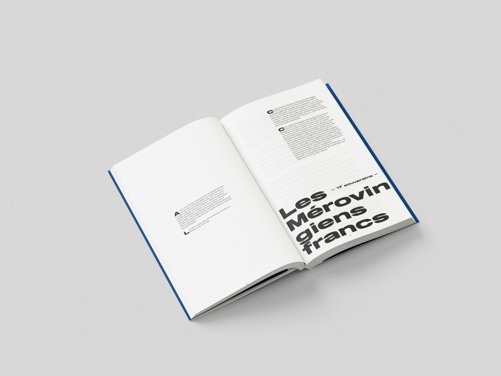
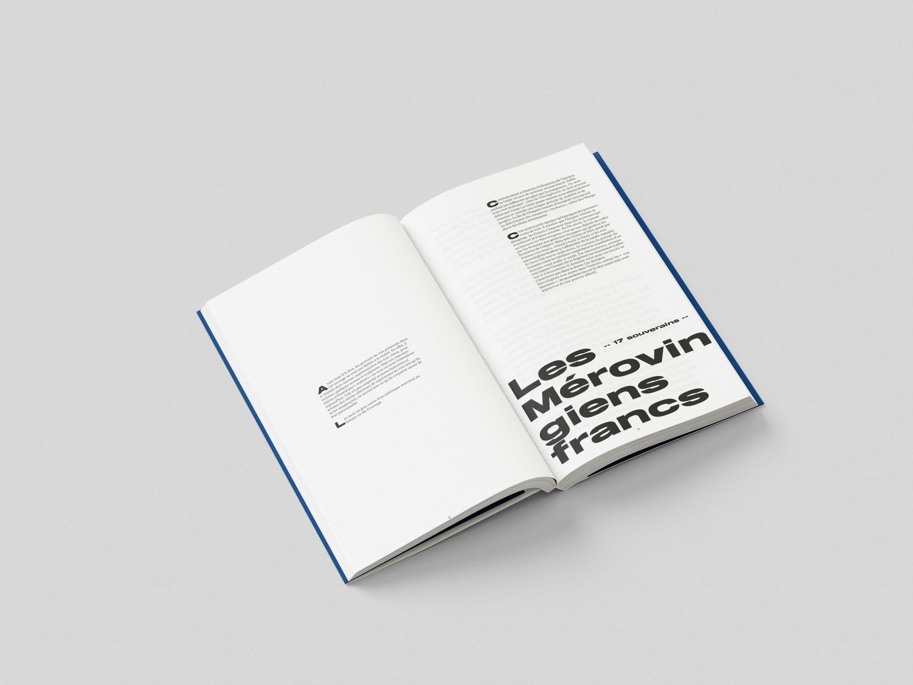

Ce projet de design éditorial est unecollection de livre de poche « Tous Savoirs ». Il vise à rendre compte d’un condensé d’informations à la manière de la collections « pour les nuls ». Néanmoins cette collection se devait d’être attrayante toute en restant didactique. Le principe de collection était de cataloguer en reprenant les objets de tri du quotidien et de l’appliquer à cette couverture. Aujourd’hui nous sommes submergé par un flot d’informations, ce projet est donc une réponse à cet enjeux actuel.